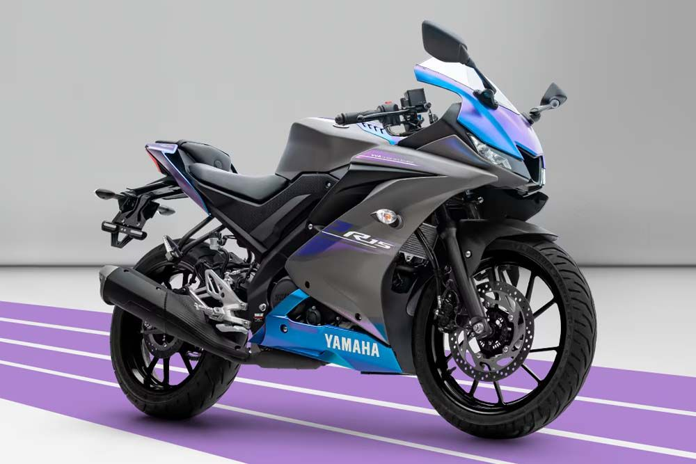
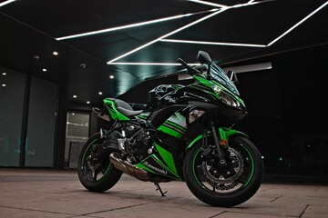
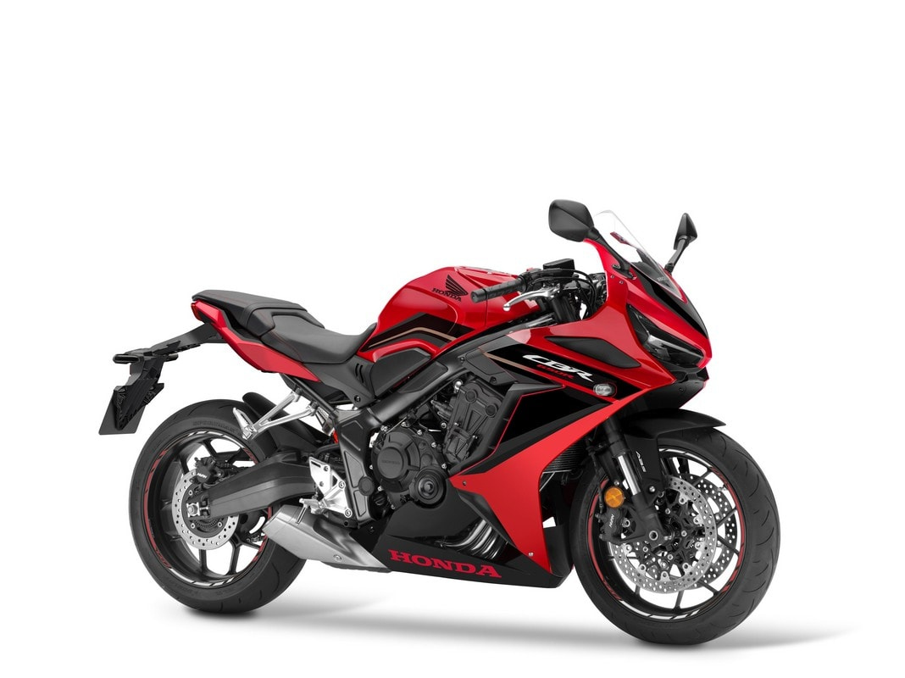

Yamaha R15

A Yamaha R15 é uma esportiva de baixa cilindrada que combina design inspirado nas motos de competição, tecnologia e economia.
Ver detalhesAs motos esportivas são desenvolvidas para oferecer desempenho, velocidade e precisão. Com um design aerodinâmico e tecnologias avançadas, elas proporcionam uma experiência diferenciada para quem gosta de duas rodas.
Conheça as motosUma moto esportiva é projetada com foco em desempenho, estabilidade e agilidade. Seu conjunto mecânico e sua aerodinâmica são pensados para proporcionar uma pilotagem mais dinâmica.
Além do desempenho, essas motos também se destacam pelo visual agressivo, pelas carenagens e pela posição de pilotagem.

A Yamaha R15 é uma esportiva de baixa cilindrada que combina design inspirado nas motos de competição, tecnologia e economia.
Ver detalhes
A Ninja 400 é uma esportiva conhecida pelo seu equilíbrio entre desempenho, agilidade e facilidade de pilotagem.
Ver detalhes
A CBR650R combina o estilo das motos esportivas com um motor de quatro cilindros, oferecendo uma experiência mais potente e emocionante.
Ver detalhes